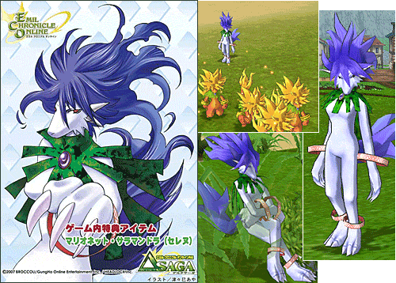

Salamandra Selenu
ที่แถมจาก Emil Chronicle Online Delta Saga เล่ม2(มั้ง?) (Jp Only)
http://eco.froztic.in.th/archive/ecofanclub/
http://eco.froztic.in.th/archive/ecofanclub/viewtopic.php?f=23&t=80029
@loucifer@ เขียน:http://board.eco.in.th/viewtopic.php?f=23&t=79984
5 Santa Theif Insmouseนี่ไงมันโผล่มาแล้ว...
2 Baby Marionette Dumptyโผล่มาในรูปของโกเลม
5 Baby Marionette Orange<<ได้จากThank Ticket เคยเห้นคนได้อยู่แต่แรร์สุโค่ย


wear เขียน:Delta Saga
มันเป็นหนังสือการ์ตูนเหรอคะ
เกี่ยวกับอีโค่ใช่ไหม
วางขายที่ไหน
เล่มเท่าไหร่